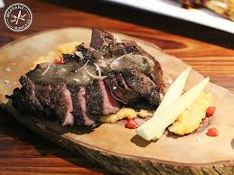

Långbakad högrev med tomat- och vitlökssmör

Description
Långbakad högrev i ugn med tomat- och vitlökssmör är som det låter en rätt
som tar tid att tillaga.
Det otroligt möra och smakrika köttet är värt all väntan och kryddsmöret
är fantastiskt!
Ingredients
- 2 bitar högrev (à ca 1 kg)
- salt
- svartpeppar
- 4 dl rött vin
- 1 köttbuljongtärning
- 8 vitlöksklyftor
- 3 msk olivolja
- 1 burk inlagda soltorkade tomater (à 200 g)
- 1 dl hackad bladpersilja
- 250 g rumstempererat smör
Steps
- Sätt ugnen på 125°C.
-
Krydda köttet runt om med salt och peppar. Lägg det i en ugnsform eller
gryta med lock och häll på vinet och smula över buljongtärningen. Täck
ugnsformen med aluminiumfolie eller lägg på locket på grytan och tillaga
mitt i ugnen i 4 timmar.
-
Skala och rosta vitlökarna i en stekpanna i olja. De ska få en
gyllenbrun färg och bli mjuka, låt svalna.
-
Hacka tomaterna och vitlöken. Blanda med persiljan och smöret. Krydda
med salt och peppar. Ställ smöret kallt till servering.
-
Skär köttet i skivor och servera med smöret och gärna en potatisterrin.